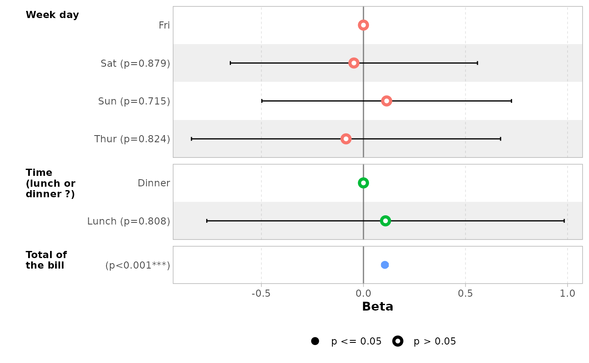
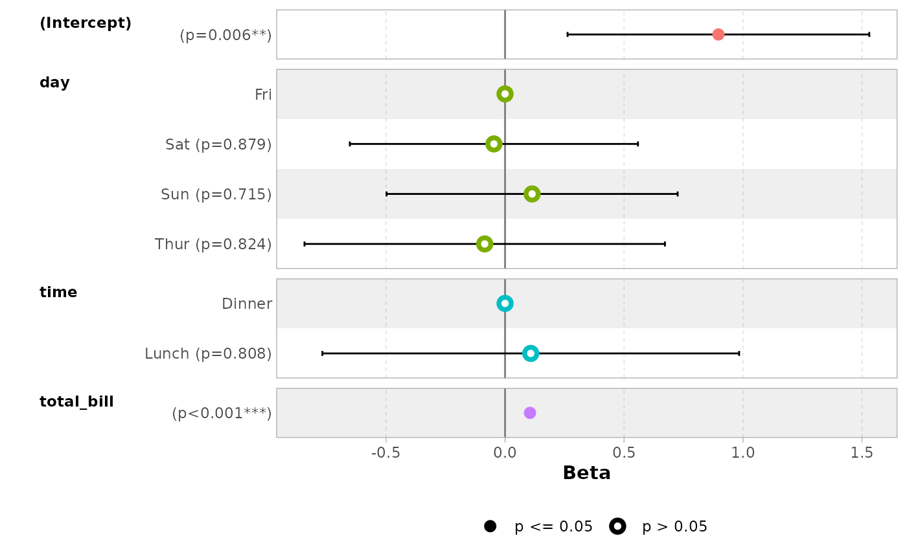
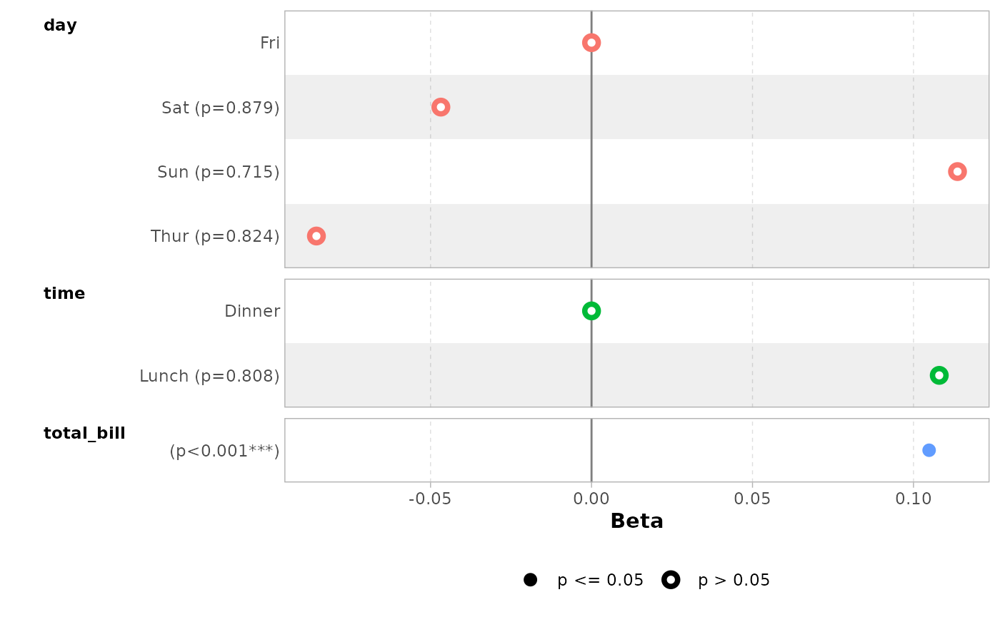
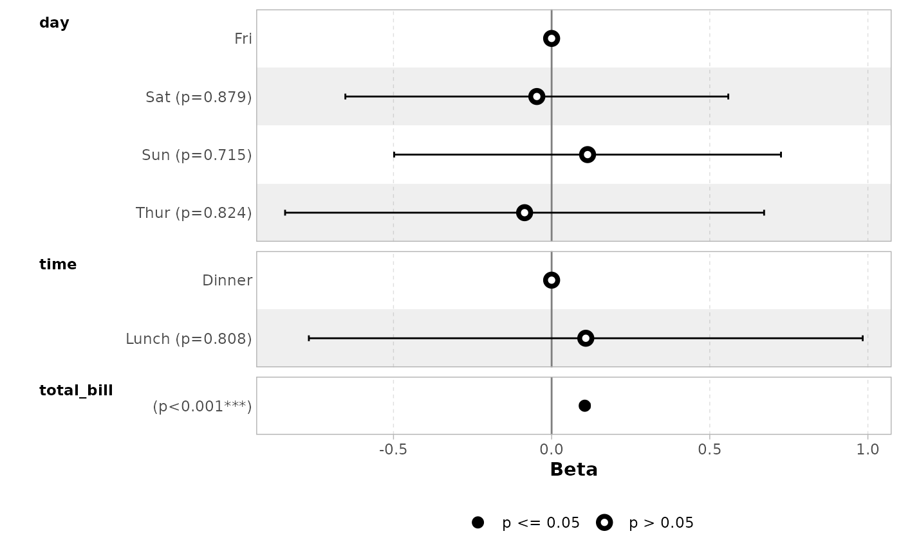
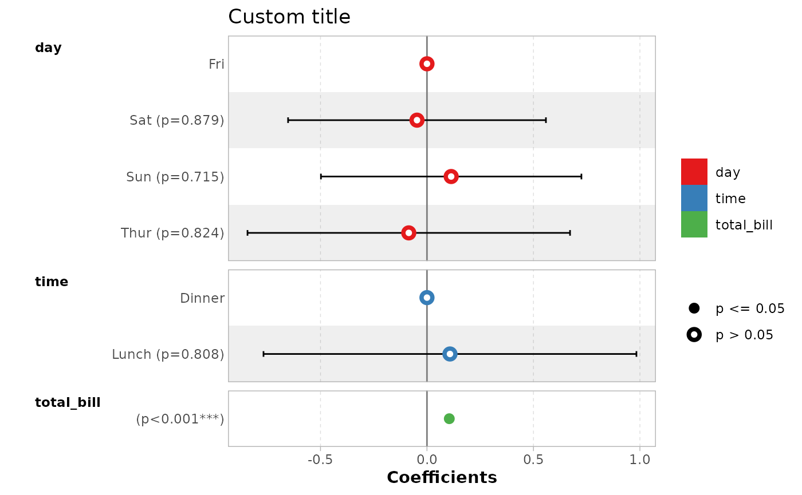
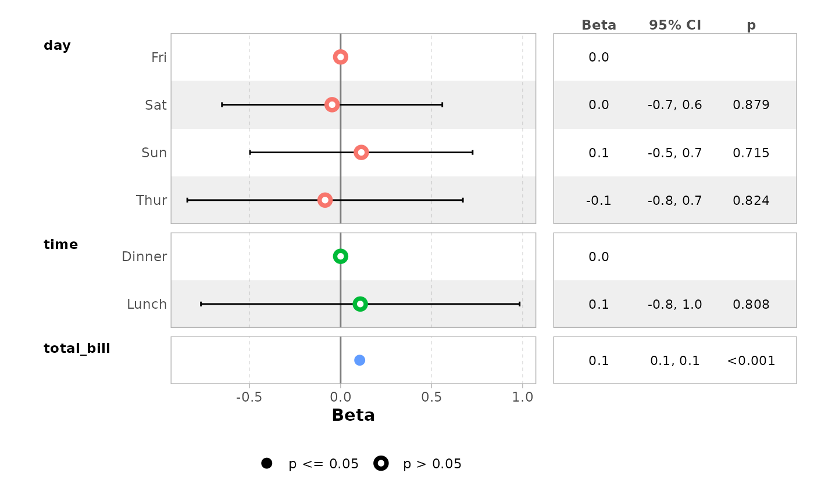
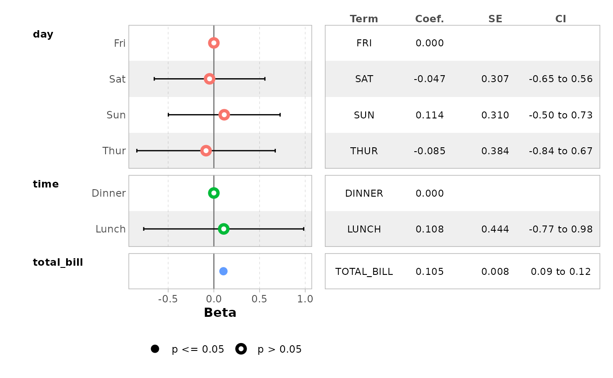

Plot model coefficients with
ggcoef_model()
Joseph Larmarange
Source:vignettes/ggcoef_model.Rmd
ggcoef_model.RmdThe purpose of ggcoef_model() is to quickly plot the
coefficients of a model. It is an updated and improved version of
GGally::ggcoef() based on
broom.helpers::tidy_plus_plus(). For displaying a nicely
formatted table of the same models, look at
gtsummary::tbl_regression().
Quick coefficients plot
To work automatically, this function requires the
broom.helpers. Simply call ggcoef_model()
with a model object. It could be the result of stats::lm,
stats::glm or any other model covered by
broom.helpers.
data(tips, package = "reshape")
mod_simple <- lm(tip ~ day + time + total_bill, data = tips)
ggcoef_model(mod_simple)In the case of a logistic regression (or any other model for which
coefficients are usually exponentiated), simply indicated
exponentiate = TRUE. Note that a logarithmic scale will be
used for the x-axis.
d_titanic <- as.data.frame(Titanic)
d_titanic$Survived <- factor(d_titanic$Survived, c("No", "Yes"))
mod_titanic <- glm(
Survived ~ Sex * Age + Class,
weights = Freq,
data = d_titanic,
family = binomial
)
ggcoef_model(mod_titanic, exponentiate = TRUE)Customizing the plot
Variable labels
You can use the labelled package to define variable
labels. They will be automatically used by ggcoef_model().
Note that variable labels should be defined before computing the
model.
library(labelled)
tips_labelled <- tips %>%
set_variable_labels(
day = "Day of the week",
time = "Lunch or Dinner",
total_bill = "Bill's total"
)
mod_labelled <- lm(tip ~ day + time + total_bill, data = tips_labelled)
ggcoef_model(mod_labelled)
You can also define custom variable labels directly by passing a
named vector to the variable_labels option.
ggcoef_model(
mod_simple,
variable_labels = c(
day = "Week day",
time = "Time (lunch or dinner ?)",
total_bill = "Total of the bill"
)
)If variable labels are to long, you can pass
ggplot2::label_wrap_gen() or any other labeller function to
facet_labeller.
ggcoef_model(
mod_simple,
variable_labels = c(
day = "Week day",
time = "Time (lunch or dinner ?)",
total_bill = "Total of the bill"
),
facet_labeller = ggplot2::label_wrap_gen(10)
)Use facet_row = NULL to hide variable names.
ggcoef_model(mod_simple, facet_row = NULL, colour_guide = TRUE)
Term labels
Several options allows you to customize term labels.
ggcoef_model(mod_titanic, exponentiate = TRUE)
ggcoef_model(
mod_titanic,
exponentiate = TRUE,
show_p_values = FALSE,
signif_stars = FALSE,
add_reference_rows = FALSE,
categorical_terms_pattern = "{level} (ref: {reference_level})",
interaction_sep = " x "
) +
ggplot2::scale_y_discrete(labels = scales::label_wrap(15))
#> Scale for y is already present.
#> Adding another scale for y, which will replace the existing scale.
By default, for categorical variables using treatment and sum contrasts, reference rows will be added and displayed on the graph.
mod_titanic2 <- glm(
Survived ~ Sex * Age + Class,
weights = Freq,
data = d_titanic,
family = binomial,
contrasts = list(Sex = contr.sum, Class = contr.treatment(4, base = 3))
)
ggcoef_model(mod_titanic2, exponentiate = TRUE)
Continuous variables with polynomial terms defined with
stats::poly() are also properly managed.
mod_poly <- lm(Sepal.Length ~ poly(Petal.Width, 3) + Petal.Length, data = iris)
ggcoef_model(mod_poly)Use no_reference_row to indicate which variables should
not have a reference row added.
ggcoef_model(
mod_titanic2, exponentiate = TRUE,
no_reference_row = "Sex"
)
ggcoef_model(
mod_titanic2, exponentiate = TRUE,
no_reference_row = broom.helpers::all_dichotomous()
)
ggcoef_model(
mod_titanic2, exponentiate = TRUE,
no_reference_row = broom.helpers::all_categorical(),
categorical_terms_pattern = "{level}/{reference_level}"
)
Elements to display
Use intercept = TRUE to display intercepts.
ggcoef_model(mod_simple, intercept = TRUE)You can remove confidence intervals with
conf.int = FALSE.
ggcoef_model(mod_simple, conf.int = FALSE)
By default, significant terms (i.e. with a p-value below 5%) are
highlighted using two types of dots. You can control the level of
significance with significance or remove it with
significance = NULL.
ggcoef_model(mod_simple, significance = NULL)
By default, dots are colored by variable. You can deactivate this
behavior with colour = NULL.
ggcoef_model(mod_simple, colour = NULL)You can display only a subset of terms with include.
ggcoef_model(mod_simple, include = c("time", "total_bill"))
It is possible to use tidyselect helpers.
ggcoef_model(mod_simple, include = dplyr::starts_with("t"))You can remove stripped rows with
stripped_rows = FALSE.
ggcoef_model(mod_simple, stripped_rows = FALSE)
Do not hesitate to consult the help file of
ggcoef_model() to see all available options.
ggplot2 elements
The plot returned by ggcoef_model() is a classic
ggplot2 plot. You can therefore apply ggplot2
functions to it.
ggcoef_model(mod_simple) +
ggplot2::xlab("Coefficients") +
ggplot2::ggtitle("Custom title") +
ggplot2::scale_color_brewer(palette = "Set1") +
ggplot2::theme(legend.position = "right")
#> Scale for colour is already present.
#> Adding another scale for colour, which will replace the existing scale.Forest plot with a coefficient table
ggcoef_table() is a variant of
ggcoef_model() displaying a coefficient table on the right
of the forest plot.
ggcoef_table(mod_simple)
ggcoef_table(mod_titanic, exponentiate = TRUE)
You can easily customize the columns to be displayed.
ggcoef_table(
mod_simple,
table_stat = c("label", "estimate", "std.error", "ci"),
ci_pattern = "{conf.low} to {conf.high}",
table_stat_label = list(
estimate = scales::label_number(accuracy = .001),
conf.low = scales::label_number(accuracy = .01),
conf.high = scales::label_number(accuracy = .01),
std.error = scales::label_number(accuracy = .001),
label = toupper
),
table_header = c("Term", "Coef.", "SE", "CI"),
table_witdhs = c(2, 3)
)
Multinomial models
For multinomial models, simply use ggcoef_multinom().
Two types of visualizations are available: "dodged" and
"faceted".
library(nnet)
mod <- multinom(Species ~ ., data = iris)
#> # weights: 18 (10 variable)
#> initial value 164.791843
#> iter 10 value 16.177348
#> iter 20 value 7.111438
#> iter 30 value 6.182999
#> iter 40 value 5.984028
#> iter 50 value 5.961278
#> iter 60 value 5.954900
#> iter 70 value 5.951851
#> iter 80 value 5.950343
#> iter 90 value 5.949904
#> iter 100 value 5.949867
#> final value 5.949867
#> stopped after 100 iterations
ggcoef_multinom(
mod,
exponentiate = TRUE
)
ggcoef_multinom(
mod,
exponentiate = TRUE,
type = "faceted"
)
ggcoef_multinom(
mod,
type = "faceted",
y.level_label = c("versicolor" = "versicolor\n(ref: setosa)")
)
Comparing several models
You can easily compare several models with
ggcoef_compare().
mod1 <- lm(Fertility ~ ., data = swiss)
mod2 <- step(mod1, trace = 0)
mod3 <- lm(Fertility ~ Agriculture + Education * Catholic, data = swiss)
models <- list(
"Full model" = mod1,
"Simplified model" = mod2,
"With interaction" = mod3
)
ggcoef_compare(models)
ggcoef_compare(models, type = "faceted")
Advanced users
Advanced users could use their own dataset and pass it to
ggcoef_plot(). Such dataset could be produced by
ggcoef_model(), ggcoef_compare() or
ggcoef_multinom() with the option
return_data = TRUE or by using broom::tidy()
or broom.helpers::tidy_plus_plus().
Supported models
| model | notes |
|---|---|
biglm::bigglm() |
|
biglmm::bigglm() |
|
brms::brm() |
broom.mixed package required |
cmprsk::crr() |
Limited support. It is recommended to use
tidycmprsk::crr() instead. |
fixest::feglm() |
May fail with R <= 4.0. |
fixest::femlm() |
May fail with R <= 4.0. |
fixest::feNmlm() |
May fail with R <= 4.0. |
fixest::feols() |
May fail with R <= 4.0. |
gam::gam() |
|
geepack::geeglm() |
|
glmmTMB::glmmTMB() |
broom.mixed package required |
lavaan::lavaan() |
Limited support for categorical variables |
lfe::felm() |
|
lme4::glmer.nb() |
broom.mixed package required |
lme4::glmer() |
broom.mixed package required |
lme4::lmer() |
broom.mixed package required |
logitr::logitr() |
Requires logitr >= 0.8.0 |
MASS::glm.nb() |
|
MASS::polr() |
|
mgcv::gam() |
Use default tidier broom::tidy() for
smooth terms only, or gtsummary::tidy_gam() to include
parametric terms |
mice::mira |
Limited support. If mod is a
mira object, use
tidy_plus_plus(mod, tidy_fun = function(x, ...) mice::pool(x) %>% mice::tidy(...))
|
multgee::nomLORgee() |
Experimental support. Use tidy_multgee()
as tidy_fun. |
multgee::ordLORgee() |
Experimental support. Use tidy_multgee()
as tidy_fun. |
nnet::multinom() |
|
ordinal::clm() |
Limited support for models with nominal predictors. |
ordinal::clmm() |
Limited support for models with nominal predictors. |
parsnip::model_fit |
Supported as long as the type of model and the engine is supported. |
plm::plm() |
|
rstanarm::stan_glm() |
broom.mixed package required |
stats::aov() |
Reference rows are not relevant for such models. |
stats::glm() |
|
stats::lm() |
|
stats::nls() |
Limited support |
survey::svycoxph() |
|
survey::svyglm() |
|
survey::svyolr() |
|
survival::clogit() |
|
survival::coxph() |
|
survival::survreg() |
|
tidycmprsk::crr() |
|
VGAM::vglm() |
Limited support. It is recommended to use
tidy_parameters() as tidy_fun. |
Note: this list of models has been tested.
broom.helpers, and therefore ggcoef_model(),
may or may not work properly or partially with other types of
models.